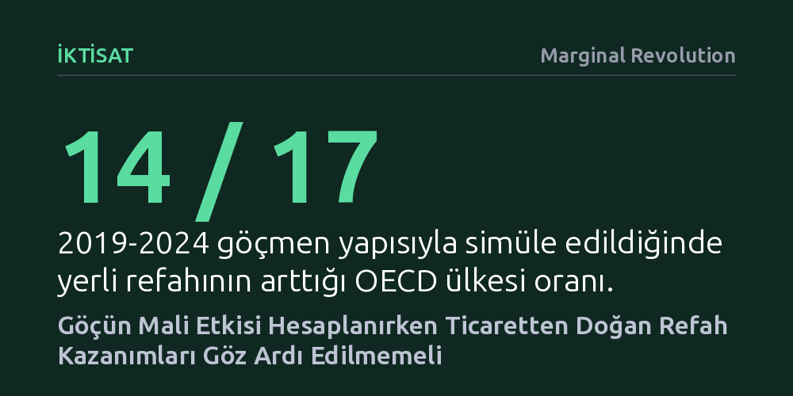

IKTISAT · Marginal Revolution · 2026-10-21
Yeni bir NBER araştırması, işgücü ve kamu maliyesi etkileri birlikte modellendiğinde göçün 17 OECD ülkesinin 14'ünde yerli refahını artırdığını gösteriyor. Düşük vasıflı yerliler yeni iş imkânlarından, yüksek vasıflılar ise hafifleyen vergi yükünden kazanıyor.
Göçün yalnızca kamu bütçesine getirdiği maliyetlere odaklanmanın yanıltıcı olduğunu, işgücü ve ticaret kazanımları birlikte hesaba katıldığında göçün yerli refahını net biçimde artırdığını gösterir.

Göçün yerli nüfus üzerindeki etkileri tartışılırken genellikle iki ayrı pencereden bakılır: işgücü piyasasındaki ücret ve istihdam baskıları ile kamu bütçesine binen harcama yükü. İktisat literatüründe bu iki kanal bugüne dek çoğunlukla birbirinden bağımsız incelendiğinden, göçün genel refah üzerindeki net etkisi eksik veya tek taraflı yorumlanıyordu.
Ulusal Ekonomik Araştırma Bürosu (NBER) bünyesinde yayımlanan yeni bir çalışma, bu yapay ayrımı ortadan kaldırarak her iki kanalı genel denge modelinde buluşturuyor. Araştırmacılar; iş arama ve eşleşme dinamiklerini, artan oranlı gelir vergisini, sermaye vergilendirmesini ve kamu mallarını eşzamanlı modelleyerek 2015-2019 dönemindeki 17 OECD ülkesine kalibre edilmiş kapsamlı bir analiz sunuyor.
Göçmen girişindeki bir yüzdelik puanlık artışın yerli refahına yansıması ülkeden ülkeye değişiyor; bu sonuç göçmenlerin beceri yapısına, yerlilerle aralarındaki ücret farkına, mevcut işsizlik oranına ve vergi sisteminin artan oranlılık düzeyine dayanıyor. Ancak 2019-2024 döneminde gelen göçmenlerin gerçek vasıf dağılımı modele uygulandığında, incelenen 17 OECD ekonomisinin 14'ünde yerli refahının net olarak yükseldiği görülüyor.
Üstelik bu refah artışı yalnızca tek bir kesimle sınırlı kalmıyor; hem düşük vasıflı hem de yüksek vasıflı yerliler farklı mekanizmalarla kazanç sağlıyor. Düşük vasıflı yerliler, yeni iş yaratımı ve vasıflı göçmenlerle ortaya çıkan tamamlayıcılık sayesinde vergi öncesi kazançlarını artırıyor. Yüksek vasıflı yerliler ise genişleyen istihdam ve vergi tabanı sayesinde üzerlerindeki işgücü vergisi yükünün azalmasından faydalanıyor.
Çalışmanın altını çizdiği temel bulgu, göçün salt bütçeye getirdiği doğrudan harcamalar üzerinden değerlendirilemeyeceğidir. Farklı becerilere sahip insanların bir araya gelmesiyle ortaya çıkan uzmanlaşma ve işbölümü, tıpkı uluslararası ticarette olduğu gibi tarafların tek başına üretemeyeceği bir refah fazlası yaratır.
Bu ticaret kazanımları ilk bakışta kamu bütçesi tablolarında doğrudan bir gelir kalemi olarak belirmese de, ekonomide yarattığı canlılıkla göçün net maliyet gibi görünen yüklerini fazlasıyla telafi edebilecek güçtedir. İşgücü piyasası ile kamu maliyesini birlikte ele almayan politikalar, kimin neyi neden kazandığını açıklamakta yetersiz kalır.
Makale yazarı, tebliğdeki bir argümana temelden itiraz ediyor: Yazarların öne sürdüğü 'göçmenlerin eşit üretkenlikte olmasına karşın daha düşük ücret alması ve yerli ekonominin bu artık değeri sahiplenmesi' fikrini ikna edici bulmuyor.
Yazara göre yerli refahını artıran asıl mekanizma çok daha yapıcıdır: Göçmenler toplam pazar büyüklüğünü genişletir; bu büyüme özellikle gelişmiş ekonomilerde artan getiri, inovasyon hızlanması ve ülkenin küresel bir yetenek mıknatısına dönüşmesi gibi ölçek avantajları getirir. Ticaret kazanımları küçük olsa dahi, pazarın genişlemesinden doğan bu dinamik etki maliyet varsayımlarını rahatlıkla aşmaktadır.